Bienvenodos a mi pagina web de mantenimiento y reparacion de los intrumentos musicales
Tocar un instrumento musical fortalece habilidades como la disciplina, la paciencia, la concentración y la autoconfianza. Sin embargo, el costo de adquirir y mantener instrumentos de calidad puede dificultar el acceso a la música para algunos estudiantes. Esta página ofrece recursos y consejos sobre el mantenimiento y reparación de instrumentos, buscando hacer la música accesible para todos.
Acerca de nosotros
La musica
Somos una pagina diseñada especialmente, para brindarte el conocimiento sobre la reparacion y mateniminto de los instrumentos musicales. Ofrecemos esta pagina web para el conocimiento de la reparacion y mateniminto etc.
¿Por quer elegirnos?
Amor por la Musica
Nuestra pacion se refleja en cada detalle de nuestro servicio
Profesionalismo
Contamos con informacion cofiable de la Musica
Mas Sobre La Musica
La creación de una página web dedicada al mantenimiento y reparación de instrumentos musicales surge como una solución viable para enfrentar estos desafíos. Esta página no solo proporcionará información detallada sobre cómo mantener y reparar los instrumentos. Este enfoque no solo permitirá una mejor utilización de los recursos existentes, sino que también incentivará la creatividad y la innovación entre los estudiantes.
Consejos para el cuidado de Instrumentos
- Uso de acsesorios adecuadosm apropiados
- Almacenamiento aduado
- Tocar con cuidado
- Limpieza regular
Instrumentos Musicales
- instrumentos folcloricos
- instrumentos de banda
- Otros instrumentos
INTRUMENTOS FOLCLORICOS
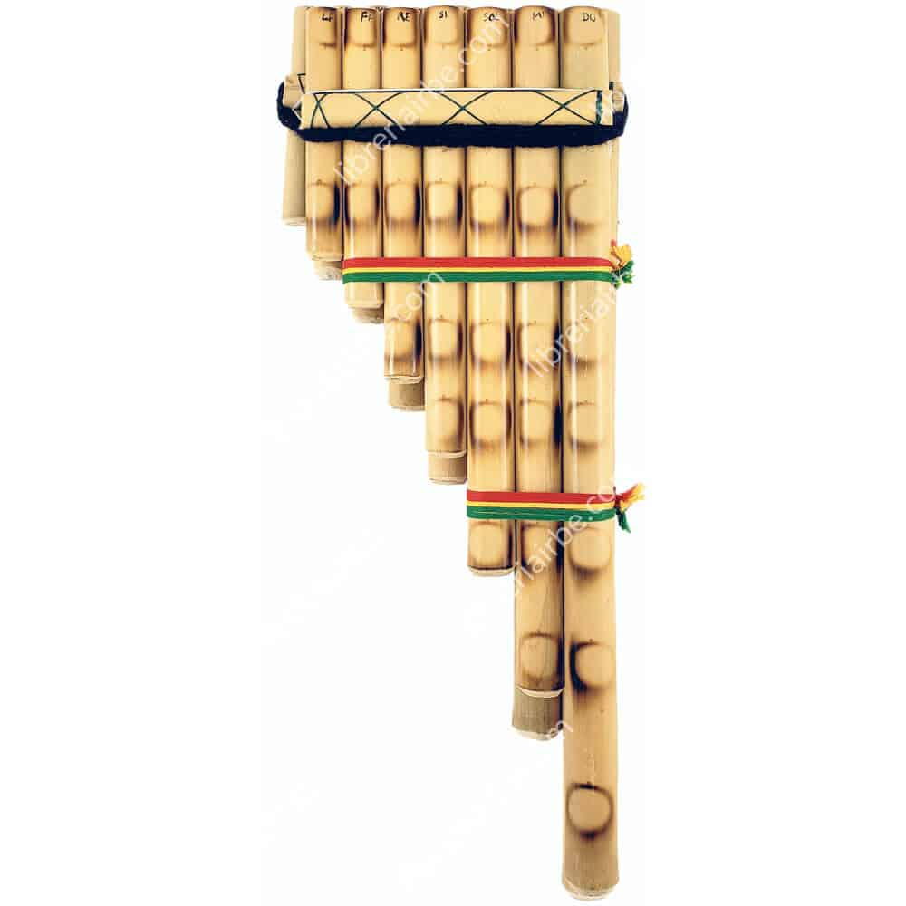ZAMPOÑA
La zampoña, también conocida como "siku" en algunas regiones, es un instrumento musical de viento típico de los Andes. Su historia se remonta a tiempos precolombinos, donde se utilizaba en ceremonias religiosas y festividades. Es un símbolo importante de la cultura andina, asociado con la identidad de pueblos como los quechuas y aymaras. Historia La zampoña tiene orígenes que se pueden rastrear hasta las civilizaciones indígenas de América del Sur, especialmente en la región andina. Se cree que se desarrolló a partir de tubos de caña o madera que se tocaban en rituales y celebraciones. Con el tiempo, se fue perfeccionando en términos de construcción y técnica de ejecución. En el periodo colonial, la zampoña fue influenciada por la música europea, pero mantuvo su esencia autóctona. En la actualidad, sigue siendo un elemento central en la música folclórica andina, tanto en Perú, Bolivia, Ecuador y el norte de Argentina. Descripción La zampoña está compuesta por una serie de tubos de diferentes longitudes, que se agrupan en un arreglo horizontal. Generalmente, se construye de caña de azúcar, pero también puede ser hecha de otros materiales como PVC o madera. Cada tubo produce una nota distinta, y se toca soplando por el extremo superior. Existen diferentes tipos de zampoñas, como la "siku", que tiene dos filas de tubos y produce una rica armonía al tocarse en conjunto. El rango tonal puede variar dependiendo de la cantidad y longitud de los tubos, lo que permite una gran variedad de melodías. El sonido de la zampoña es suave y melódico, evocando paisajes andinos y tradiciones ancestrales. Hoy en día, se utiliza tanto en música tradicional como en fusiones modernas, manteniendo viva la rica herencia cultural de los Andes.
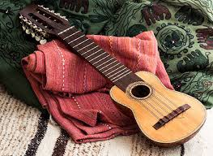CHARANGO
El charango es un instrumento musical de cuerda originario de los Andes, especialmente asociado con Bolivia, aunque también se encuentra en Perú y en otras regiones andinas. Su historia y evolución son fascinantes. Historia El charango tiene sus raíces en la época colonial, aproximadamente en el siglo XVIII. Se cree que fue creado por los indígenas que buscaban un instrumento similar a la guitarra, pero más pequeño y portátil. Originalmente, se fabricaba con madera, pero con el tiempo, los artesanos comenzaron a utilizar el caparazón de armadillo, lo que le otorgó un sonido distintivo y resonante. Esta característica le ha dado un lugar especial en la música folclórica andina. Descripción El charango es un instrumento de cuerdas que normalmente tiene cinco órdenes de cuerdas (dobles), aunque existen variaciones con cuatro o seis órdenes. Su cuerpo es pequeño, generalmente mide entre 60 y 70 cm de largo. La parte posterior del charango puede estar hecha de caparazón de armadillo, lo que le da un aspecto único y un tono brillante. El charango se toca con los dedos o con pua, y es conocido por su sonido alegre y melodioso, que lo hace ideal para acompañar danzas y canciones folclóricas. A menudo se utiliza en festivales, celebraciones y reuniones familiares, siendo un símbolo de identidad cultural andina. En la actualidad, el charango ha experimentado una renovación, siendo incorporado en diferentes géneros musicales y colaboraciones, lo que ha ampliado su popularidad más allá de las fronteras andinas.
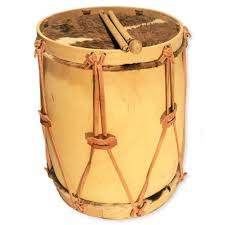BOMBO
El bombo es un instrumento de percusión fundamental en la música folclórica andina, especialmente en Bolivia. Su historia y características son muy interesantes. Historia El bombo tiene raíces precolombinas y ha sido utilizado por diversas culturas indígenas de los Andes. Originalmente, se fabricaba con materiales naturales como madera y piel de animales, lo que le confería un sonido profundo y resonante. En las comunidades andinas, el bombo no solo acompaña la música, sino que también desempeña un papel en rituales y ceremonias, simbolizando la conexión con la tierra y las tradiciones ancestrales. Descripción El bombo suele ser un tambor grande, de forma cilíndrica, hecho de madera, con dos parches de piel en sus extremos. Se toca con baquetas o mazos, produciendo un sonido profundo y potente que marca el ritmo de las danzas y canciones. Existen diferentes tipos de bombo, que varían en tamaño y diseño, pero todos cumplen la función de proporcionar la base rítmica en las agrupaciones musicales. En la actualidad, el bombo sigue siendo esencial en la música folclórica de la región, siendo utilizado en danzas como la morenada, la saya y la diablada, entre otras. Su sonido vibrante y envolvente añade una dimensión especial a la música andina, conectando a las personas con sus raíces culturales.

QUENA
La quena es un instrumento musical de viento tradicional de los Andes, conocido por su sonido melódico y nostálgico. Su historia y características son muy ricas. Historia La quena tiene orígenes antiguos, que se remontan a las culturas precolombinas de los Andes. Se cree que fue utilizada por civilizaciones como los Incas y otros pueblos indígenas. Originalmente, se fabricaba con caña de azúcar, pero con el tiempo se comenzaron a hacer versiones en madera y otros materiales. La quena ha sido parte integral de la música andina, utilizada en ceremonias, festivales y en la vida cotidiana. Descripción La quena es un instrumento de tubo, generalmente de entre 30 y 50 cm de largo, con un extremo abierto y un extremo cerrado, donde se encuentra la embocadura. Tiene entre seis y siete agujeros para los dedos, lo que permite tocar diferentes notas. El sonido de la quena es suave y melódico, lo que la hace ideal para interpretar melodías románticas y nostálgicas. Se toca soplando por la embocadura, y los músicos pueden variar el tono y la intensidad con la presión del aire. En la música folclórica andina, la quena se utiliza frecuentemente junto con otros instrumentos, como el charango y el bombo, formando una combinación sonora rica y evocadora. Hoy en día, la quena no solo se encuentra en la música tradicional, sino que también ha sido adoptada en diversos géneros, como la música popular y el jazz, ampliando su alcance y apreciación a nivel mundial.

GUITARRA
La guitarra es un instrumento de cuerda muy versátil y ampliamente utilizado en diversas culturas, incluida la música folclórica andina. Su historia y características la hacen única en cada contexto. Historia La guitarra tiene orígenes que se remontan a varios siglos atrás, derivando de instrumentos de cuerda antiguos como la vihuela y el laúd. En el contexto andino, la guitarra llegó a ser utilizada en el período colonial, adaptándose a las tradiciones musicales locales. A medida que la música folclórica andina se desarrolló, la guitarra se convirtió en un acompañamiento esencial para canciones y danzas, fusionando elementos indígenas y europeos. Descripción La guitarra andina generalmente es de seis cuerdas, aunque existen variantes con más cuerdas, como la guitarra doble. Su cuerpo puede ser de madera, lo que le da un sonido cálido y resonante. La guitarra se toca con los dedos o con pua, permitiendo una gran variedad de técnicas, desde rasgueos hasta punteos melódicos. En la música folclórica andina, la guitarra acompaña a otros instrumentos como el charango y la quena, creando un rico entramado sonoro. Es utilizada en diversos géneros, desde la música tradicional hasta la música popular moderna, y su versatilidad permite que se adapte a diferentes estilos y ritmos. Hoy en día, la guitarra sigue siendo un símbolo de la música andina y es fundamental en festividades, reuniones familiares y presentaciones culturales, conectando a las personas con sus raíces y tradiciones.

INTRUMENTOS DE LA BANDA
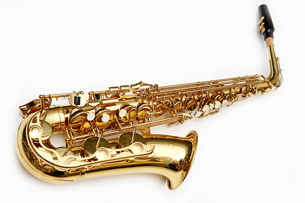SAXOFON
Historia del saxofón El saxofón fue inventado en 1846 por Adolphe Sax, un fabricante de instrumentos musicales belga. Sax quería crear un instrumento que combinara las cualidades del clarinete y las de los instrumentos de metal. Su objetivo era lograr un sonido potente y rico que pudiera ser utilizado tanto en orquestas como en bandas militares. El primer saxofón que creó fue el saxofón soprano, pero rápidamente desarrolló una serie de tamaños y tipos, incluyendo el alto, tenor y barítono. Aunque al principio tuvo un uso limitado, el saxofón ganó popularidad en la música militar y posteriormente en el jazz, donde se convirtió en uno de los instrumentos más emblemáticos del género. En el siglo XX, músicos como John Coltrane, Charlie Parker y Ornette Coleman llevaron el saxofón a nuevas alturas, explorando su versatilidad y expresividad. Hoy en día, el saxofón se utiliza en una variedad de géneros, desde el jazz hasta la música clásica, el rock y el pop. Descripción del saxofón El saxofón es un instrumento de viento hecho de metal, generalmente de latón, y se caracteriza por su forma curvada y su tubo cónico. Posee una lengüeta simple que produce sonido al vibrar cuando el músico sopla a través de ella. Este instrumento está equipado con una serie de llaves que permiten al intérprete cambiar las notas al abrir y cerrar orificios a lo largo del cuerpo del saxofón. El saxofón se destaca por su capacidad para expresar una amplia gama de emociones, lo que lo convierte en un instrumento muy apreciado por músicos de diversas disciplinas. Su versatilidad y timbre único lo han consolidado como un favorito en muchos géneros musicales.
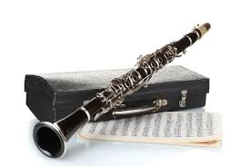CLARINETE
Historia del clarinete El clarinete es un instrumento de viento de la familia de los instrumentos de lengüeta simple. Su desarrollo se remonta a principios del siglo XVIII, aunque sus raíces se encuentran en instrumentos más antiguos, como el chalumeau. El clarinete fue patentado en 1700 por el inventor alemán Johann Christoph Denner, quien le añadió llaves para ampliar su rango y facilitar la ejecución. Desde su creación, el clarinete ha evolucionado significativamente. En el siglo XVIII, ganó popularidad en la música clásica y orquestal. Compositores como Mozart y Beethoven comenzaron a escribir obras específicas para clarinete, destacando su versatilidad y expresividad. Durante el siglo XIX, el clarinete se estableció en diversas formaciones musicales, incluyendo bandas militares y conjuntos de jazz. En este período, se desarrollaron varias tonalidades del instrumento, como el clarinete alto y el clarinete bajo. En el siglo XX, se consolidó en el jazz gracias a músicos como Benny Goodman y Artie Shaw, que exploraron su capacidad improvisatoria. Descripción del clarinete El clarinete es un instrumento cilíndrico, generalmente hecho de madera (aunque también existen modelos de plástico o metal). Su cuerpo está dividido en tres partes: la boca, el tubo y la campana. El sonido se produce al hacer vibrar una lengüeta simple, que está montada en la boquilla. El clarinete tiene una serie de orificios y llaves que permiten al músico controlar las notas. Este diseño le da una amplia gama tonal y la capacidad de tocar tanto notas suaves y melódicas como pasajes rápidos y virtuosos.
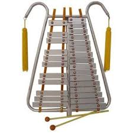LIRA
Historia de la lira La lira es un instrumento de cuerda que tiene una rica historia que se remonta a la antigüedad. Sus orígenes se encuentran en las antiguas culturas de Mesopotamia y Egipto, donde se utilizaban instrumentos similares para acompañar la poesía y la música en ceremonias religiosas y festivales. Durante la Grecia clásica, la lira se convirtió en un símbolo cultural y educativo. Era un instrumento asociado con Apolo, el dios de la música, y su uso se extendió entre los poetas y filósofos. La lira griega, hecha de madera y con cuerdas de tripa, era tocada a mano o con un pua. En la Edad Media, la lira evolucionó y se transformó en diversos tipos, como la lira de mano y la lira gitana. En el Renacimiento, se popularizó aún más en Europa, donde los luthiers comenzaron a fabricar instrumentos más sofisticados. La lira se convirtió en un elemento esencial de la música de la época, especialmente en la música popular y de danza. Descripción de la lira La lira se caracteriza por su forma de arco y su caja de resonancia, que suele ser de madera. Generalmente, tiene entre 5 y 10 cuerdas, que pueden ser de tripa, nylon o metal. Se toca utilizando los dedos o un pua, permitiendo al intérprete producir una amplia variedad de tonos y matices. La lira es conocida por su sonido suave y melódico, que evoca una sensación de nostalgia y belleza. A lo largo de los siglos, ha sido utilizada en diversas tradiciones musicales, desde la música clásica hasta la folclórica, y continúa siendo un instrumento apreciado por su elegancia y su rica historia.
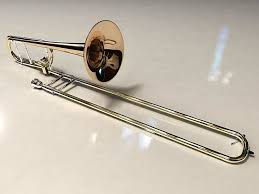TROMBON
Historia del trombón El trombón es un instrumento de viento de la familia de los metales, conocido por su distintivo deslizamiento que permite alterar su tono. Su historia se remonta al Renacimiento, cuando surgió como una evolución del "sackbut", un instrumento similar que se usaba en Europa a partir del siglo XV. A medida que la música se desarrolló, el trombón ganó popularidad en las orquestas y las bandas militares. Durante el Barroco, el trombón comenzó a ser utilizado en la música sacra y en la ópera. Compositores como Bach y Handel lo integraron en sus obras, resaltando su capacidad para aportar profundidad y expresividad. En el siglo XIX, el trombón se consolidó en el ámbito del jazz, donde se convirtió en un instrumento clave, gracias a su flexibilidad y su capacidad para realizar glissandos. Hoy en día, el trombón es un componente esencial en diversas formaciones musicales, incluyendo orquestas, bandas de música, y grupos de jazz, donde continúa evolucionando y explorando nuevos estilos. Descripción del trombón El trombón se caracteriza por su tubo largo y recto, que se curva al final formando una campana. Su principal característica distintiva es el deslizamiento o vara, que permite al músico cambiar la longitud del tubo y, por ende, la afinación de las notas. Esto le da una sonoridad única y un rango dinámico amplio. El trombón es apreciado por su timbre rico y su capacidad para realizar melodías suaves y potentes. Su versatilidad lo convierte en un instrumento destacado en una amplia variedad de géneros musicales, desde la música clásica hasta el jazz y el funk.
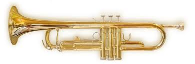TROMPETA
Historia de la trompeta La trompeta es uno de los instrumentos de viento más antiguos, con orígenes que se remontan a las antiguas civilizaciones de Egipto y Mesopotamia, donde se usaban instrumentos similares para fines ceremoniales y militares. A lo largo de la historia, la trompeta ha evolucionado tanto en diseño como en uso. En la Edad Media, la trompeta se utilizaba principalmente en la música militar y ceremonial. Con el Renacimiento, comenzó a integrarse en la música de cámara y orquestal, y durante el Barroco, compositores como Bach y Handel comenzaron a escribir obras específicas para este instrumento, destacando su brillantez y potencia. El siglo XIX marcó un importante avance tecnológico con la incorporación de válvulas, lo que permitió a los trompetistas tocar una gama más amplia de notas y facilitar la ejecución de melodías complejas. En el siglo XX, la trompeta se consolidó en el jazz, donde figuras como Louis Armstrong y Miles Davis exploraron su capacidad expresiva e improvisatoria. Descripción de la trompeta La trompeta es un instrumento de metal, generalmente de latón, con un tubo recto que se ensancha en la campana. Suele tener tres válvulas que permiten al músico cambiar el flujo de aire y acceder a diferentes notas. Al igual que otros instrumentos de la familia de los metales, produce sonido al vibrar los labios al soplar en la boquilla. Algunas características de la trompeta incluyen: Tono brillante y agudo: la trompeta es conocida por su sonido potente y claro, lo que la hace destacar en cualquier conjunto. Rango amplio: puede tocar desde notas graves hasta notas muy agudas, lo que la convierte en un instrumento versátil. Diferentes tipos: aunque la trompeta en si bemol es la más común, existen otros tipos, como la trompeta en do y la trompeta piccola. La trompeta es un instrumento fundamental en una variedad de géneros musicales, incluyendo música clásica, jazz, rock y música popular. Su capacidad para expresar emociones y su papel como líder en conjuntos musicales la han consolidado como uno de los instrumentos más icónicos y reconocibles.
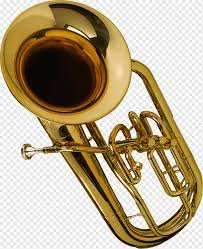BAJO
Historia del bajo El bajo es un instrumento de cuerda que ha evolucionado a lo largo de los siglos, jugando un papel crucial en la música de diversas culturas. Su antecesor más antiguo es el laúd, que se remonta a la antigüedad. Sin embargo, el bajo moderno, como lo conocemos hoy, comenzó a tomar forma en el Renacimiento y el Barroco con la aparición de la viola da gamba y el contrabajo. En el siglo XVIII, el contrabajo se consolidó como el bajo de la orquesta, proporcionando la base armónica y rítmica. Durante el siglo XIX, con el auge de la música clásica y el desarrollo de la ópera, el contrabajo se convirtió en un elemento esencial en las orquestas sinfónicas. Con la llegada del siglo XX, el bajo eléctrico fue desarrollado, revolucionando la música popular. Este nuevo instrumento permitió a los bajistas tocar en una variedad de estilos, desde el jazz hasta el rock y el funk, ampliando su alcance y versatilidad. Descripción del bajo El bajo se refiere principalmente a dos tipos de instrumentos: el contrabajo y el bajo eléctrico. Contrabajo: Es el más grande de la familia de los instrumentos de cuerda. Tiene cuatro cuerdas (aunque algunos tienen cinco) y se toca con un arco o pizzicato. Produce un sonido profundo y resonante, siendo fundamental en la música clásica y en conjuntos de jazz. Bajo eléctrico: Introducido en la década de 1930, el bajo eléctrico tiene generalmente cuatro cuerdas y se toca utilizando una pua o los dedos. Este instrumento es amplificado electrónicamente, lo que le permite generar un sonido potente y versátil, fundamental en géneros como el rock, pop y funk. Características del bajo: Tono profundo y rico: Ambos tipos de bajo aportan un sonido que complementa la armonía y el ritmo de la música. Rango amplio: El contrabajo tiene un registro más grave, mientras que el bajo eléctrico puede tocar una amplia variedad de tonalidades y efectos. Versatilidad: El bajo es esencial en casi todos los géneros musicales, desde la música clásica hasta el jazz, rock y música popular. El bajo es conocido como la "columna vertebral" de muchos conjuntos musicales, ya que proporciona la base sobre la cual se construyen las melodías y armonías. Su importancia en la música es innegable, y su evolución continúa influyendo en la forma en que se crea y se interpreta la música hoy en día.
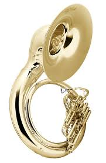HELICON
Historia del helicón El helicón es un instrumento de viento de la familia de los metales, específicamente una variante del tuba. Su diseño se originó en Europa en el siglo XIX, en respuesta a la necesidad de un instrumento que pudiera ser utilizado en bandas de marcha y orquestas. Se popularizó particularmente en la música militar debido a su portabilidad y su sonido resonante. El helicón fue diseñado para ser tocado mientras el músico está de pie y en movimiento, con una forma que le permite envolver el cuerpo del intérprete. Este diseño facilita su transporte y uso en desfiles y conciertos al aire libre. A lo largo del tiempo, se ha utilizado en diversos géneros musicales, desde música militar hasta jazz y música popular. Descripción del helicón El helicón se caracteriza por su forma circular y su tubo largo que se enrolla, lo que le da una apariencia distintiva. Generalmente, está hecho de latón y tiene una campana amplia que ayuda a proyectar su sonido. Al igual que otros instrumentos de la familia de los metales, produce sonido al vibrar los labios al soplar en la boquilla. Características del helicón: - Forma envolvente: Su diseño permite que el instrumento se ajuste al cuerpo del músico, facilitando su manejo durante el movimiento. - Tono profundo: El helicón produce un sonido grave y potente, ideal para proporcionar la base armónica en conjuntos musicales. - Rango y versatilidad: Aunque es principalmente un instrumento de bajo, su capacidad para tocar diferentes estilos lo ha hecho popular en diversas formaciones, incluyendo bandas de música y conjuntos de jazz. El helicón es un instrumento menos común en la música clásica, pero su popularidad en bandas de marcha y su versatilidad en otros géneros musicales lo han mantenido presente en el panorama musical actual. Su sonido distintivo y su diseño funcional lo convierten en una opción atractiva para muchos músicos.
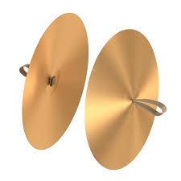PLATILLOS
Historia de los platillos Los platillos son instrumentos de percusión que han existido desde la antigüedad. Su uso se remonta a civilizaciones como la egipcia y la griega, donde se utilizaban en ceremonias religiosas y festivales. Originalmente, eran simples discos de metal que producían un sonido al ser golpeados entre sí o al ser percutidos. A lo largo de los siglos, los platillos fueron evolucionando en forma y técnica de fabricación. En el siglo XIX, con el desarrollo de la orquesta moderna, los platillos se incorporaron a la batería y a las formaciones orquestales, convirtiéndose en un elemento esencial en la música clásica, así como en el jazz y el rock. Los platillos se popularizaron aún más en el siglo XX, especialmente con la expansión del jazz y el rock, donde su uso se volvió fundamental para crear ritmos y acentos en las composiciones. Descripción de los platillos Los platillos están hechos generalmente de una aleación de bronce o latón y se caracterizan por su forma circular y su superficie plana. Se utilizan en pares, aunque también existen platillos de diferentes tamaños y tipos que cumplen diversas funciones en un conjunto musical. Tipos de platillos: - Platillos de choque: Los más comunes, utilizados para acentos y efectos sonoros. Se golpean entre sí o con baquetas. - Platillos de hi-hat: Forman parte de la batería y están montados en un soporte, permitiendo al baterista abrir y cerrar el espacio entre ellos para crear diferentes sonidos. - Platillos ride: Diseñados para mantener un ritmo constante, son más grandes y ofrecen un sonido más sostenido. - Platillos crash: Producen un sonido explosivo y se utilizan para acentuar momentos específicos en la música. Características de los platillos: - Sonido resonante: Producen un tono brillante y explosivo, ideal para marcar ritmos y acentos. - Versatilidad: Se utilizan en una amplia variedad de géneros musicales, desde música clásica hasta jazz, rock, pop y música folclórica. - Técnica de ejecución: Se pueden tocar de diversas maneras, ya sea golpeándolos entre sí, usando baquetas, o mediante técnicas de fricción. Los platillos son un componente esencial en muchas formaciones musicales, aportando ritmo y color a las composiciones. Su historia rica y su evolución técnica los han convertido en uno de los instrumentos de percusión más reconocibles y utilizados en la música contemporánea.
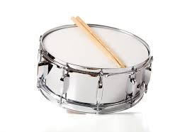TAMBOR
Historia del tambor El tambor es uno de los instrumentos de percusión más antiguos, con una historia que se remonta a miles de años. Se han encontrado evidencias de tambores en civilizaciones antiguas como Egipto, Mesopotamia y China, donde se utilizaban en ceremonias religiosas, guerras y celebraciones. A lo largo de la historia, el tambor ha sido un símbolo de comunicación y unidad en muchas culturas. En la Edad Media, los tambores se incorporaron a la música militar, donde eran utilizados para dar órdenes y marcar el ritmo en las marchas. Durante el Renacimiento y el Barroco, comenzaron a aparecer en la música orquestal, y su uso se expandió en diferentes estilos musicales. Con el advenimiento del jazz y la música popular en el siglo XX, el tambor adquirió una nueva dimensión. Los tambores de batería se desarrollaron y se convirtieron en una parte esencial de la banda de jazz y, más tarde, en el rock y otros géneros. Descripción del tambor El tambor es un instrumento de percusión que consta de un cilindro de madera o metal (cuerpo) cubierto por membranas tensadas (parches) en ambos extremos. El sonido se produce al golpear los parches con las manos o con baquetas. Tipos de tambores: - Tambor de mano: Incluye instrumentos como el djembe y el bodhrán. Se toca con las manos y se utiliza en diversas tradiciones folclóricas. - Tambor militar: Como el snare drum, utilizado en bandas de marcha y orquestas. Tiene un sonido agudo y se caracteriza por su parche resonante. - Tambor de base (bass drum): Un tambor grande que produce un sonido profundo y se utiliza en orquestas y en bandas de música. - Tambores de batería: Un conjunto de tambores que incluye el snare, el tom y el bass drum, formando la base rítmica en muchas bandas de música. Características del tambor: - Sonido rítmico y profundo: Proporciona la base rítmica en la música y es fundamental para mantener el tiempo. - Versatilidad: Se utiliza en casi todos los géneros musicales, desde música clásica hasta jazz, rock, funk y música folclórica. - Técnicas de ejecución: Los tambores se pueden tocar de muchas maneras, incluyendo técnicas de golpeo, fricción y técnicas de pedales (en el caso de los tambores de batería). El tambor es un instrumento esencial en la música, no solo por su capacidad para marcar el ritmo, sino también por su poder para unir a las personas en la danza y la celebración. Su historia rica y su evolución lo han convertido en un elemento vital en la creación musical en todo el mundo.

TAMBOR GRANADERO
Historia del tambor granadero El tambor granadero, también conocido como tambor militar, tiene sus raíces en las tradiciones de las tropas de infantería de Europa, especialmente durante los siglos XVII y XVIII. Originalmente, estos tambores eran utilizados para marcar el ritmo en las marchas y dar órdenes durante las batallas. Su sonido resonante ayudaba a mantener el orden y la cohesión entre las tropas en medio del caos del combate. Con el tiempo, el tambor granadero se fue convirtiendo en un símbolo de prestigio y honor dentro de las fuerzas armadas. Era común que los regimientos contaran con sus propios tambores decorados, y el toque de sus redobles se convirtió en parte integral de ceremonias y desfiles militares. A medida que las sociedades y la música evolucionaron, el tambor granadero también encontró su lugar en bandas de música y en la música popular, manteniendo su asociación con la tradición militar y ceremoniosa. Descripción del tambor granadero El tambor granadero se caracteriza por su forma cilíndrica, generalmente fabricado de madera o metal, y por sus parches de cuero o materiales sintéticos que se tensan en ambos extremos. Su construcción es robusta, diseñada para soportar el uso en condiciones de marcha y combate. Características del tambor granadero: - Tamaño: Suele ser más grande que los tambores de mano, lo que le permite producir un sonido más profundo y resonante. - Sonido potente: El tambor granadero produce un sonido fuerte y claro, esencial para ser escuchado en el contexto militar. - Técnicas de ejecución: Se toca con baquetas, y los músicos utilizan diversas técnicas para crear diferentes ritmos y patrones, que son fundamentales en la música militar. Uso contemporáneo: Hoy en día, el tambor granadero sigue siendo un elemento importante en bandas militares y de marcha. También se utiliza en algunas tradiciones folclóricas y en la música de percusión contemporánea, manteniendo viva su rica herencia histórica. El tambor granadero es un símbolo de disciplina y tradición, y su sonido distintivo sigue resonando en desfiles y ceremonias en todo el mundo.

BOMBO
Historia del bombo El bombo es un instrumento de percusión que tiene una larga historia, utilizado en diversas culturas a lo largo de los siglos. Su origen se remonta a instrumentos de percusión antiguos, como los tambores de piel que se usaban en ceremonias y celebraciones en civilizaciones como Egipto y Mesopotamia. A lo largo de la Edad Media, el bombo se incorporó a la música militar y de danza en Europa. En el siglo XVIII, comenzó a aparecer en orquestas y bandas de música, donde se utilizaba para proporcionar un sonido profundo y resonante que complementaba otros instrumentos. Durante el siglo XIX, su uso se amplió aún más con la popularización de la música de marcha y el desarrollo de la música popular. En el siglo XX, el bombo se convirtió en un elemento clave en la batería moderna, donde su papel es fundamental para establecer el ritmo y la base de muchos géneros musicales, desde el jazz hasta el rock y la música popular. ### Descripción del bombo El bombo es un tambor grande y cilíndrico, normalmente hecho de madera o metal, con parches de piel o sintéticos tensados en ambos extremos. Su tamaño y construcción le permiten producir un sonido profundo y potente. Características del bombo: - Tamaño: Generalmente, es uno de los tambores más grandes en un conjunto de batería, lo que le otorga un sonido más resonante. - Sonido grave: El bombo produce un tono profundo que es fundamental para establecer el pulso en la música. - Técnicas de ejecución: Se toca con un pedal o con baquetas, y su sonido se utiliza para marcar el ritmo en diversas formaciones musicales. Uso contemporáneo: Hoy en día, el bombo se encuentra en una amplia variedad de géneros musicales. En las bandas de marcha y orquestas, su función es proporcionar el ritmo base. En la batería moderna, es esencial para mantener el compás y dar fuerza a la música. El bombo, con su sonido resonante y profundo, sigue siendo un pilar fundamental en la percusión, uniendo a los músicos y dando vida a las composiciones. Su rica historia y versatilidad lo convierten en un instrumento indispensable en la música de todo el mundo.
GUITARRA
Se realiza el mantenimiento limpieza y cambios de cuerdas: Limpia cuerdas y cuerpo tras cada uso, y cambia las cuerdas cada 2-3 meses. Ajuste de acción y entonación: Ajusta el alma y las selletas para comodidad y precisión en el sonido. Cuidado del ambiente: Evita cambios bruscos de temperatura y humedad; almacena en un estuche rígido. Reparaciones menores: Reemplaza cejuelas, selletas y limpia potenciómetros (en eléctricas). Consulta a un luthier para reparaciones mayores o ajustes complejos.

TAMBOR
Tambien contamos con sugerencias sobre productos que son utiles para el mantenimiento, Para mantener y reparar tu tambor: 1. Limpieza: Usa un paño suave para quitar polvo y sudor. 2. Afinación: Ajusta la tensión en forma de cruz para un sonido uniforme. 3. Cambio de parches: Reemplaza parches desgastados para mantener el sonido. 4. Cuidado del ambiente: Evita humedad y temperaturas extremas. 5. Protección: Usa fundas o estuches acolchados para transporte y almacenamiento.
SAXOFON
También ofrecemos consejos de seguridad e informacion sobre como realizar reparaciones de manera segura Para mantener tu saxofón: 1. Limpieza: Usa limpiador de algodón para retirar la humedad tras cada uso. 2. Cuidado de llaves y almohadillas: Limpia las llaves y seca las almohadillas para evitar desgaste. 3. Grasas y aceites: Aplica grasa para corchos cuando lo necesite y usa aceite específico para ejes de llaves cada pocos meses para un movimiento fluido. 4. Almacenamiento: Guarda en su estuche para protegerlo. 5. Reparación: Lleva a un técnico si detectas problemas en las llaves o fugas de aire.
GALERIA
Imagen 1

Imagen 2
Imagen 3

Imagen 4